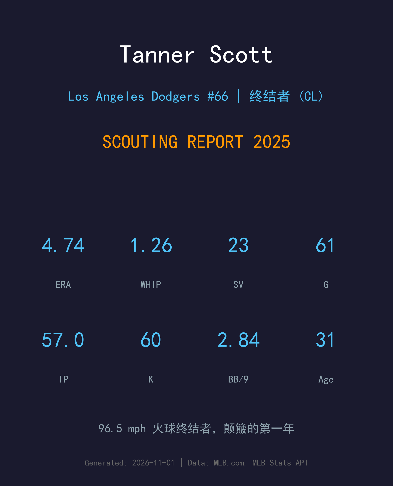
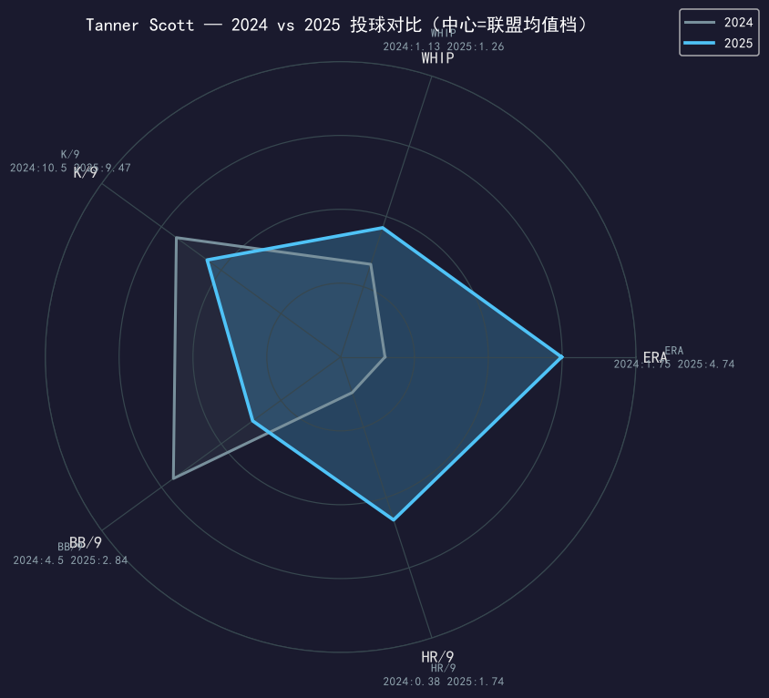
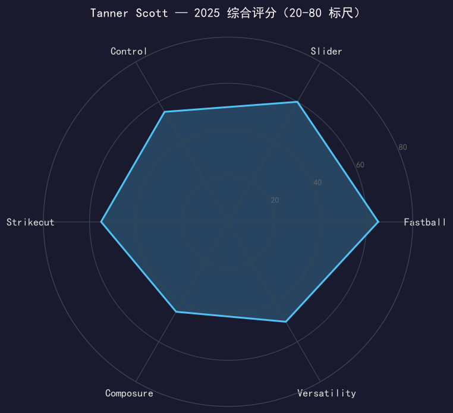

Los Angeles Dodgers #66 | 终结者 | 左投 | 96.5 mph 火球终结者，颠簸的第一年

Tanner Scott 带着 2024 年 1.75 自责分率、22/24 救援成功与全明星光环，在休赛期与道奇签下四年合约，被寄予厚望成为第九局的标准答案。2025 年 61 场、23 次救援成功仍是全队之最，但 4.74 自责分率与 33 次救援机会中 10 次失手，让这第一年的风评褒贬参半。
细看数据会发现一个反直觉的事实：他的控球其实大幅进步了——BB/9 从 4.50 降到 2.84，K/BB 从 2.33 升到 3.33。真正杀死他的不是坏球，而是全垒打：HR/9 从 0.38 暴涨到 1.74，57 局里被敲 11 轰。
季末的伤病让他错过了道奇整段夺冠之旅，11 月 2 日才从伤病名单激活。对道奇而言，这是一份还有三年合约的终结者投资第一年；对 Scott 而言，2026 年是必须证明自己值回票价的一年。
随美国国家队夺得 2023 年 WBC 冠军，在国际赛场积累了终结者级的大赛履历。
72 场出赛、1.75 自责分率、22/24 救援成功、84 次三振——生涯最佳一季，入选全明星，跻身联盟顶级终结者行列。
虽然 ERA 飙至 4.74，但 61 场出赛 23 次救援成功仍是全队最高——第九局的大门钥匙，大部分时间仍挂在他的腰上。

| 赛季 | G | W-L | ERA | WHIP | IP | SO | BB | SV/SVO | HR/9 |
|---|---|---|---|---|---|---|---|---|---|
| 2024（全明星年） | 72 | 9-6 | 1.75 | 1.13 | 72.0 | 84 | 36 | 22/24 (92%) | 0.38 |
| 2025（道奇首季） | 61 | 1-4 | 4.74 | 1.26 | 57.0 | 60 | 18 | 23/33 (70%) | 1.74 |
这组对比需要拆开看：控球从 4.50 改善到 2.84、保送率几乎腰斩，说明他的投球机制没有崩；真正崩的是全垒打——从 3 支变成 11 支。终结者的世界容许多少坏球，但容不了一发 ninth-inning 的全垒打。10 次救援失败中相当部分拜长打所赐。这不代表他「不行了」，更像是一颗球种（速球占比 52.6% 偏高且进垒点被研究透）需要调整的警讯。
2025 赛季真实配球数据（MLB Stats API pitchArsenal）：
联盟顶级火球，尾劲与均速都属上乘。问题是占比过半且进垒高度模式化——当季被研究透后，长打惩罚随之而来。
与速球形成速度差的第二武器，对付右打者的横向位移出色。若能把配球从「速球主导」转向「滑球主导」，或许是 2026 年的解题钥匙。
注：2025 年配球几乎完全由速球与滑球两球种构成（合计 99.8%），球种单一性是全联盟终结者中最高的一档——这既是他火球自信的体现，也是对手球队会议上的头号靶点。
4.50 → 2.84 的 BB/9 是终结者最难得的那类进步——绝大多数失控终结者死于坏球，而 Scott 偏偏把坏球治好了。K/BB 3.33 也刷新了他的生涯纪录。单看这些，他的投球是在「变好」而非「变差」。
0.38 → 1.74 的 HR/9 暴涨了 4.5 倍，这是 4.74 ERA 的全部解释。当一个终结者的速球进垒模式被联盟视频组拆解，而你 52.6% 的配球都依赖同一颗速球时，「巧合」就变成了「可复制的打击方案」。休赛期调整配球比例与进垒高度，是他技术层面唯一需要做的事。
季末伤停让他错过了整段夺冠之旅——这对一个刚签下四年合约的新援来说，意味着错过了与这座城市建立情感链接的最佳窗口。11 月 2 日的激活是好消息，但季末的伤病与整季的不稳定叠加，让他的第二年开局压力陡增。

火球终结者，等待反弹的第二季
B- 级 / 终结者（反弹候选）
道奇 2025 季后赛夺冠之路：外卡 2-0 红人 → NLDS 3-1 费城人 → NLCS 4-0 酿酒人 → 世界大赛 4-3 多伦多蓝鸟。
Scott 因季末伤病未能进入季后赛名单，全程缺席了球队的夺冠之旅，直到 11 月 2 日才随阵容激活回归。
Tanner Scott 的 2026 年只有一个主题：反弹。四年合约还剩三年，道奇没有放弃他的理由，但他需要用上半季的表现把「终结者」三个字从 Vesia 手里拿回来。技术上，调整配球比例（提高滑球占比）、丰富进垒高度，是已被数据指明的方向。
理想剧本：健康回归，ERA 回到 3 以下，救援成功率 85%+
现实基准：与 Vesia 分担第九局，担任 co-closer
上行惊喜：若滑球主导配球奏效，重返全明星水准
Tanner Scott 来自俄亥俄州沃伦，2017 年 9 月 20 日登上大联盟。他的 ascent 是典型的力量型终结者剧本：从牛棚末段一路靠火球爬升到第九局，2023 年随美国队捧起 WBC 冠军，2024 年用 1.75 的自责分率入选全明星——那是他职业生涯的完美注脚。
2024 年休赛期，道奇用一份四年合约把他从自由市场抢走，希望他能为卫冕冠军锁死最后三局。2025 年的现实却是一地碎玻璃：ERA 飙到 4.74、10 次救援失败、季末伤病、错过整段夺冠之旅。
但故事还没写完。终结者的世界里，没有比一个愤怒的火球手更适合「第二年反弹」的剧本了。2026 年的第九局，Tanner Scott 仍打算亲手关上那扇门。